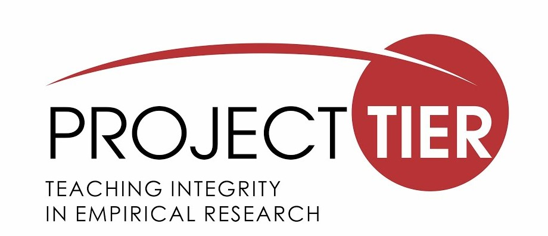

2.2 Proyecto TIER (Teaching Integrity in Empirical Research)

Objetivos y visión
El proyecto TIER es una iniciativa respaldada por la Fundación Alfred Sloan que se propone contribuir a un cambio en las normas y conducta profesionales en torno a la transparencia y reproducibilidad en la investigación empírica en las ciencias sociales.
Uno de los principios orientadores de sus actividades es el proveer formación en herramientas para la documentación oportuna de procedimientos que involucren datos estadísticos a través de rutinas y referencias que garanticen la reproducibilidad de estos. La idea subyacente que motiva estas acciones es que los autores puedan concebir la documentación como un componente esencial de la comunicación de sus resultados con sus pares, como también el público no especializado, de modo tal que estas medidas contribuyan a incrementar la confianza y credibilidad en la evidencia científica. En esta línea, su declaración de principios sostiene que su objetivo se puede considerar como logrado cuando:
(…) no proporcionar documentación de replicación para un estudio empírico se considere tan aberrante como escribir un artículo teórico que no contenga pruebas de las proposiciones, un artículo experimental que no describa las condiciones de tratamiento o un artículo de revisión de leyes que no cite los estatutos legales o las decisiones judiciales. (traducción propia)
Contribución
Es necesario tener presente que uno de los principales campos de acción del proyecto TIER es la Educación y Entrenamiento, hacia cientistas sociales en formación, tomando en consideración que es en el ciclo formativo inicial donde se deben impulsar la adopción de prácticas integrales para la investigación social empírica. En esta línea, uno de los elementos destacables es la sección de herramientas para la enseñanza titulada “TIER in the Classroom”, sus contenidos referidos a temas de reproducibilidad pueden resumir de la siguiente manera:
Soup-to-Nuts Exercises: No existe una traducción en el español, no obstante la expresión “Soup-to-Nuts” refiere a un proceso de “inicio-a-fin”. Como lo dice, esta sección muestra ejercicios orientados a la reproducibilidad de los análisis pasando por (1) los datos, (2) procesamiento, (3) análisis y (4) reporte. La idea fuerza de este ejercicio es introducir a estudiantes a los principios y prácticas fundamentales de la investigación social transparente y reproducible para que los implementen en sus tareas o informes.
Materiales para clases: Esta sección está fuertemente orientada al análisis estadístico y a los métodos cuantitativos. Se presentan una serie de veinticuatro cursos de pregrado y postgrado que incorporan en su currículum los principios de transparencia y reproducibilidad en la enseñanza de los métodos de manera transversal. Los materiales de cada curso se encuentran disponibles para libre descarga, incorporando ejercicios de análisis estadístico (R, Stata, SPSS), reportes dinámicos (R Markdown, Markstat) y sus respectivos _ syllabus_.
Trabajos estudiantiles: En este sección se incorporan una serie de trabajos estudiantiles/papers, los cuales están acompañados de una completa documentación basada en el Protocolo TIER (ver detalle abajo). El objetivo es presentar modelos de trabajos realizados con análisis reproducibles, de modo tal que quien esté interesado en emplear la estructura de un proyecto pueda observar un trabajo real e, idealmente, logre reproducir completamente sus resultados.
Una de las contribuciones más relevantes del proyecto TIER es la elaboración de estándares para la organización, publicación y comunicación de proyectos de investigación empírica cuantitativa reproducible. Al respecto, existen dos esfuerzos orientados a este fin:
Por un lado tenemos el Protocolo TIER, el cual constituye una serie de especificaciones respecto a los contenidos de la documentación para la replicación de un estudio, el cual está orientado a ser empleado para la enseñanza de la investigación que incorpore la reproducibilidad de los análisis. En este caso es importante precisar, como ya hemos identificado en un principio, que el concepto de replicación se emplea como sinónimo de reproducibilidad, entendiendo este último como la conjunción de datos y métodos originales que nos permitan regenerar los resultados de un estudio que ha sido publicado. Por lo tanto, cuando en TIER se habla de replicación se refiere a esta idea. La documentación debe incluir una serie de elementos descritos a continuación.
- Datos empleados por el proyecto
- Rutinas de código escrito en el software empleado para la preparación y análisis estadístico. Esto se incluye dado que el objetivo es proveer los datos brutos a procesar, junto con todas las instrucciones que permiten regenerar los resultados reportados en el estudio.
- Fuentes de información que contribuyan a comprender detalladamente cada sección del estudio de inicio a fin.
Por otro lado tenemos el Protocolo DRESS (Documenting Research in the Empirical Social Sciences). Al igual que el Protocolo TIER, se incorporan los mismos estándares para la documentación para una investigación transparente que incorpore la reproducibilidad de los análisis. Sin embargo, este se encuentra adaptado a los propósitos de los investigadores profesionales, más que para el uso de los estudiantes durante su formación en investigación.